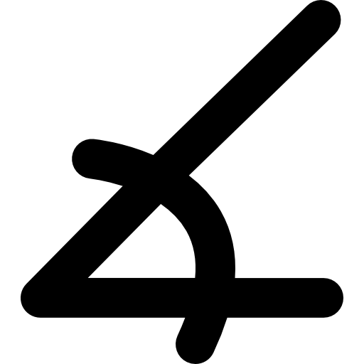
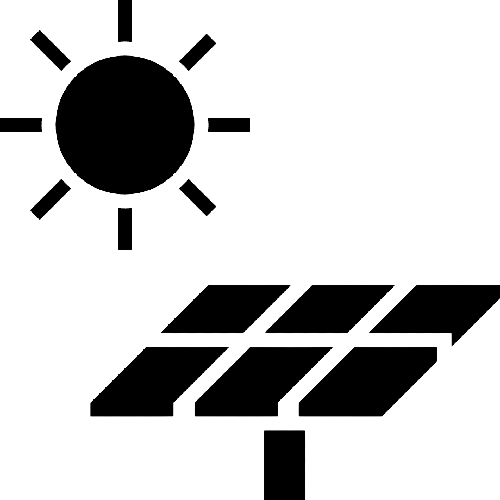

<!-- Este es para la vista de Android  -->
<ion-header [translucent]="true" >
  <ion-toolbar>
    <ion-buttons slot="start">
      <ion-menu-button ></ion-menu-button>
    </ion-buttons>
    <ion-title> </ion-title>

  </ion-toolbar>
</ion-header>
<!-- Este es para modificarla vista de en general de la aplicación tanto para
IOS como android  aqui va la estructura de la aplicación-->
<ion-content [fullscreen]="true" >
  <ion-header collapse="condense">
    <ion-toolbar>
      <ion-title size="large"></ion-title>
    </ion-toolbar>
  </ion-header>
  <div>
    <h1 class="estilo-inicio">{{ idiomaSeleccionado === 'es' ? inicio_espanol :  inicio_ingles }}</h1>
  </div>
  <!-- Contenido del menú principal -->
  <div class="estilo-conversion-divisas">
    <a href="conversiones-divisas">  </a>
     <a href="conversiones-divisas">{{ idiomaSeleccionado === 'es' ? conver_divisas_espanol :  conver_divisas_ingles }}</a>
  </div>
  <!----------------------------------------------------------------------------------------->
   <div class="estilo-conversion-basicas">
    <a href="menu-conversiones-unidades-basicas"></a>
    <a href="menu-conversiones-unidades-basicas">{{ idiomaSeleccionado === 'es' ? conver_uni_basi_espanol :  conver_uni_basi_ingles }}</a>
  </div>
  <!----------------------------------------------------------------------------------------->
  <div class="estilo-conversion-hogar">
    <a href="menu-conversiones-unidades-hogar"></a>
    <a href="menu-conversiones-unidades-hogar">{{ idiomaSeleccionado === 'es' ? conver_unidades_hogar_espanol :  conver_unidades_hogar_ingles }}</a>
  </div>
  <!----------------------------------------------------------------------------------------->
  <div class="estilo-conversion-ciencia">
    <a href="menu-conversiones-ciencia">
       </a>
    <a href="menu-conversiones-ciencia">{{ idiomaSeleccionado === 'es' ? conver_unidades_ciencia_espanol : conver_unidades_ciencia_ingles }}</a>
  </div>
  <!----------------------------------------------------------------------------------------->
  <div class="estilo-conversion-varias">
    <a href="menu-conversiones-varias">
      </a>
    <a href="menu-conversiones-varias">{{ idiomaSeleccionado === 'es' ?  conver_unidades_varias_espanol :  conver_unidades_varias_ingles}}</a>
  </div>
<!----------------------------------------------------------------------------------------->
    <div class="estilo-calculos-electricos">
      <a href="menu-calculos-electricos" >
        </a>
    <a href="menu-calculos-electricos">{{ idiomaSeleccionado === 'es' ?calculos_electricos_espanol :  calculos_electricos_ingles }}</a>
  </div>
<!----------------------------------------------------------------------------------------->
  <div class="estilo-calculos-motor">
    <a href="menu-calculos-motor">
      </a>
    <a href="menu-calculos-motor">{{ idiomaSeleccionado === 'es' ? calculos_motor_espanol :  calculos_motor_ingles }}</a>
  </div>
<!----------------------------------------------------------------------------------------->
  <div class="estilo-conversion-calculos-fotovoltaicos">
    <a href="calculos-fotovoltaicos">
      </a>
    <a href="calculos-fotovoltaicos">{{ idiomaSeleccionado === 'es' ? calculos_fotovoltaicos_espanol :  calculos_fotovoltaicos_ingles }}</a>
 </div>
  <!-- Fin del contenido del menú principal -->
</ion-content>
